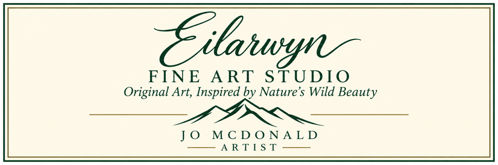

Sunlit
Acrylic · 16 × 20 · SOLD

Acrylic · 16 × 20 · SOLD

Acrylic · 10 × 10 · SOLD

12 × 12 · SOLD
Acrylic · 24 × 12 · SOLD

Acrylic · 7.5 × 7.5 · SOLD
Jo McDonald is a Calgary artist whose work is inspired by the wild beauty of the Canadian landscape. Through expressive colour, movement and brushwork, she explores the places and moments in nature that invite us to stop, look and feel.
Upcoming exhibitions and events will be posted here.